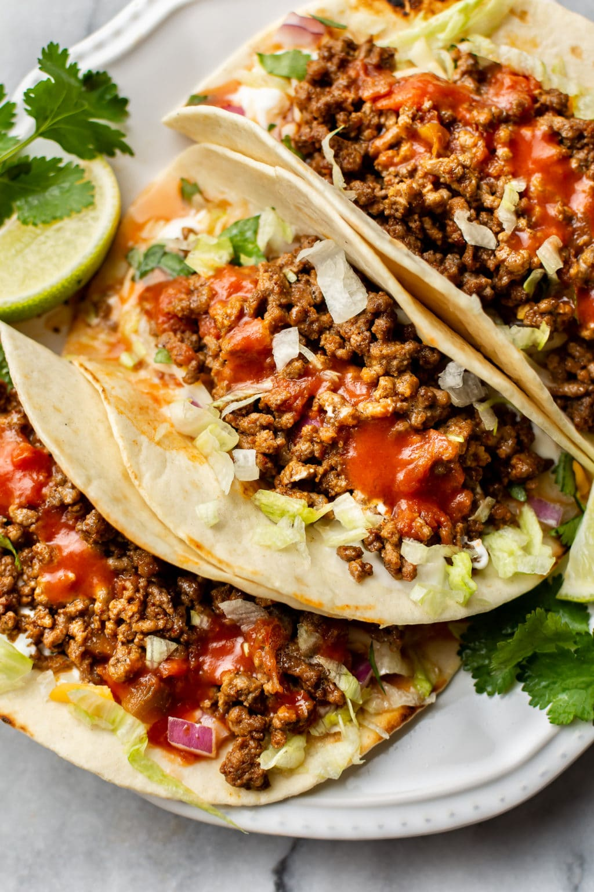

main meal
Tacos
Beef Tacos with Homemade Seasoning
Juicy seasoned beef mince in crispy taco shells, stopped with melted cheese, fresh lettuce, tomato, onion and sour cream.
What You'll Need
Ingredients
Taco Shells
- 10-12 crispy taco shells
Beef Filling
- 1 Tbsp oil
- 2 garlic cloves, minced
- 1 onion, finely chopped
- 500g beef mince
- 2 Tbsp tomato paste
- ¼ cup water
Taco Seasoning
- 1 tsp garlic powder
- 1 tsp onion powder
- 1 tsp dried oregano
- 2 tsp cumin powder
- 2 tsp paprika
- ¼ tsp cayenne pepper
- 1 tsp salt
- ¼ tsp black pepper
Toppings
- Grated cheese
- Shredded lettuce
- 2 tomatos, chopped
- ½ red or white onion, chopped
- Sour cream
- Taco sauce, optional
- Coriander, optional
- Jalapeños, optional
Time To Cook
Method
Make the Taco Seasoning
Add the garlic powder, onion powder, oregano, cumin, paprika, cayenne pepper, salt and black pepper to a small bowl.
Stir everything together until evenly combined, then set aside.
Beef Filling
Heat the oil in a large pan over high heat.
Add the onion and garlic and cook for about 2 minutes until softened and lightly golden.
Add the beef mince and cook while breaking it apart with a wooden spoon until browned.
Add the homemade taco seasoning and stir through the beef.
Cook for another 2 minutes.
Stir in the tomato paste and water.
Cook for another minute until the mixture is juicy but not watery.
Prepare the Taco Shells
Preheat the oven to 180°C.
Arrange the taco shells upright in a baking dish so they are ready to be filled.
Assemble the Tacos
Fill each taco shell with the seasoned beef mixture.
Sprinkle grated cheese over the beef.
Bake for 5-7 minutes, until the cheese has melted and the taco shells are crisp.
Remove the tacos from the oven and top with lettuce, tomato, onion and sour cream.
Finish with taco sauce, coriander or jalapeños if desired.
Serve immediately.
Source & Credits
Recipe & Image Credits
Recipe Source
RecipeTin Eats
This Tacos recipe was originally publish by RecipeTin Eats.
View Original RecipeImage Source
Salt & Lavender
The image on this page is sourced from Salt & Lavender.
View Image SourceRecipe creators and image sources are credited to acknowledge the original creators of the content used on this page.